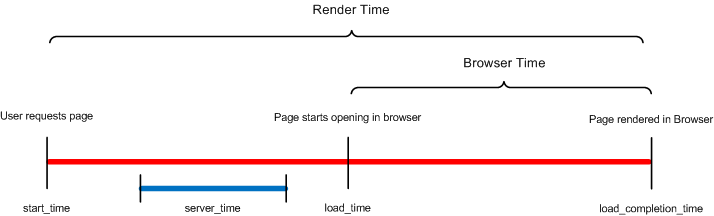

Client Transaction Timings
| |
Note: This article applies to Fuji. For more current information, see Client Transaction Timings at http://docs.servicenow.com
The Wiki page is no longer being updated. Please refer to http://docs.servicenow.com for the latest product documentation. |
Contents
1 Overview
The Client Transaction Timings feature enhances the system logs by providing more information on the durations of transactions between the client and the server. By providing information on how time was spent during the transaction, performance issues can be tracked down to the source by seeing where the time is being consumed.
The system can collect information from the following browsers:
- Chrome
- Firefox
- Internet Explorer
2 Recording Client Transactions
Client transactions are stored with other transactions in the Transaction Log Entry [syslog_transaction] table. Client transactions all have the client_transaction field set to true.
| |
Note: Older data is managed on this table with the table cleaner. |
2.1 Enabling Client Transaction Logging
By default, the system does not gather client transaction data. To enable client transaction set the following system properties to true.
| Property | Description |
|---|---|
| glide.client.track_transaction_timings | Enables the collection of client transactions. |
| glide.log.client.form.sections | Measures time rendering form sections. |
| glide.log.client.related.lists | Measures time rendering related lists. |
| glide.log.client.ui.policy | Measures time enforcing UI policies. |
| glide.log.client.script.on.load | Measures time running onLoad scripts. |
| glide.log.client.script.on.change | Measures time running onChange scripts. |
3 Client Transactions Information
The System Logs application contains a Client Transactions module, which provides a list of every logged transaction between client and server within the last day. The following information is tracked:
| Field | Description |
|---|---|
| Created | The moment the transaction was recorded. |
| Response Time | The number of ms spent by the server in fulfilling the transaction. |
| Business Rule Time | The number of ms spent by business rules triggered by the transaction. |
| SQL Time | The number of ms spent by the SQL database. |
| Client Response Time | (Load_completion_time) - (start_time). It is inclusive of server time. |
| Client Network Time | The number of ms spent by the network the client is connecting through. |
| Browser Time | The number of ms spent by the browser during the transaction. |
| Client Script Time | The number of ms spent executing client scripts. |
| UI Policy Time | The number of ms spent executing ui policy. |
| Type | Type of transaction (such as form or list). See Transaction Log Types. |
| Table | The table that was displayed. For example, incident, change_request. |
| View | The view for this form/list. |
3.1 Transaction Log Types
The transaction log tracks the following transaction types:
| Type | Description |
|---|---|
| List | List transactions. |
| Form | Form transactions. |
| XMLHttp | Transactions that run through GlideAjax, and the URL is xmlhttp.do. |
| Report | The page sys_report_template.do. |
| SOAP | SOAP transactions. |
| Export | When a list is exported as XML, Excel, and so forth. |
| Scheduler | When a scheduled job is performed. |
| Text Search | The text search transaction or any of its related operations. |
| Other | A generic type when no other type matches. |
3.2 Client Detailed Information
A more detailed breakdown of the client timings for all Form rendering (but not list rendering) is also tracked. To see details, drill into a particular client transaction record and observe the related list at the base of the screen.
| Field | Description |
|---|---|
| Order | The order during the load that this operation occurred |
| Type | The type of operation |
| Name | Descriptive name of this particular operation |
| Duration | Number of ms this particular operation took to complete |
4 Timing Values
The following diagram illustrates the timing increments for rendering a page:
|  |
{kind=link}
The variables in this diagram are defined as follows:
| Variable | Description |
|---|---|
| start_time | The date and time the user requests a page (the user clicks on a link). This value is set by hooking into the beforeunload event of the previous page. The beforeunload event is not properly supported by WebKit browsers, which is why the client timings are not supported on Safari or Chrome. |
| load_time | The date and time that the current page starts loading in the browser. This value is set by an inline javascript that runs as the first script in the HTML body. |
| server_time | The time in ms spent by the server processing the transaction. The server reports this value to the client. |
| load_completion_time | The date and time that the page is fully rendered in the browser. This operation is performed as the last script on the page and identifies the time the page completed loading. |
The AJAXClientTiming script include gathers and populates the following times in the Transaction Log Entry [syslog_transaction] table.
| Label | Element | Description | Calculation |
|---|---|---|---|
| Response Time | client_response_time | Calculates the overall time to deliver the page by subtracting the time the user requests the page from the time the page is fully rendered in the browser. |
load_completion_time - start_time |
| Network Time | client_network_time | Calculates the time the network takes to process the request by subtracting the time of the user's request from the time the page starts loading in the browser, and then subtracting the server processing time. |
load_time - start_time - server_time |
| Browser Time | browser_time | Calculates the time the browser takes to deliver the page by subtracting the time the page is fully rendered from the time the page starts loading in the browser. | load_completion_time - load_time |
5 Disabling Client Transactions
To disable client transaction functionality:
- Enter sys_properties.list in the application navigator filter.
- Locate the property named glide.client.track_transaction_timings.
- Set the property value to false.
The functionality can be enabled again by setting the property value to true.
Contents > Administer > Core Configuration > Time
Contents > Administer > Security > Auditing and System Logs